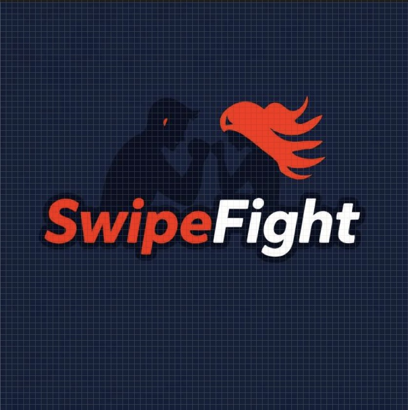

Coach's Companion
Personal project built using the MERN stack that allows coaches to manage rosters. Still a work in progress on implementing user authentication and fixing minor issues.
Bachelor's Degree in Computer Engineering
from the University of Washington
Bachelor's Degree in Computer Engineering from the University of Washington.
I am a computer engineering graduate with strong interests in software design, development and mathematics. I enjoy problem-solving and working to create practical things for users.
Technical and soft skills.
A few of my recent personal and academic projects.
Personal project built using the MERN stack that allows coaches to manage rosters. Still a work in progress on implementing user authentication and fixing minor issues.

Co-led a six member project team to develop a full-stack app that helps martial artists connect with local sparring partners in a fun and competitive way.
Lead designer of the Food Passport project, a mobile app that intersects cultural discovery with culinary exploration. This project went through the full HCI-centered design process from user-focused ideation and research to prototyping and mockups, culminating in a user-tested and refined final design.